Toybox: CAD App
Designing a powerful cross-platform CAD experience specialized for 3D Printing within the Toybox App.
My Role:
Sole Product Designer
Duration:
Mar 2023 – Aug 2024
Team
2 Developers, CPO, CTO
Platforms
Mobile, Tablet, Desktop
Sole Product Designer
Mar 2023 – Aug 2024
2 Developers, CPO, CTO
Mobile, Tablet, Desktop
Toybox is a 3D printing platform for kids ages 10 to 14. I led the design of its first in-app 3D modeling tool across phone, tablet and desktop, so kids could make their own toy without leaving the app to do it.
of custom creations were made in CAD, more than the other 11 creation methods combined!
the prints of the most popular toy app in September 2024
users who opened the CAD app created a toy within an hour, in a median of 8.4 minutes.
Source: Mixpanel data from month of September 1-30
Kids can now model a toy from a blank canvas and 3D print it from any device, without leaving Toybox. Here’s what shipped; the rest of this page is how it got there.
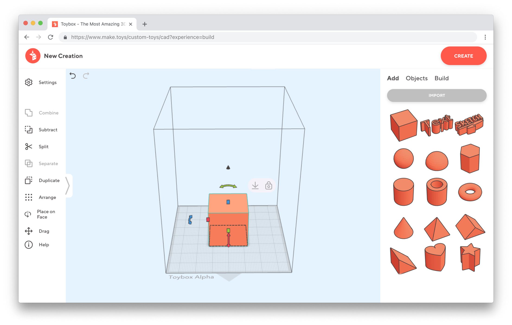
The Edit panel is purely contextual to the selected object on the scene and appears within the 3D scene when clicked.
Users would have to leave to a third-party application to create their own creations from scratch. Our mission was to create a new experience for users to seamlessly 3D model and print their toy directly in the Toybox app.
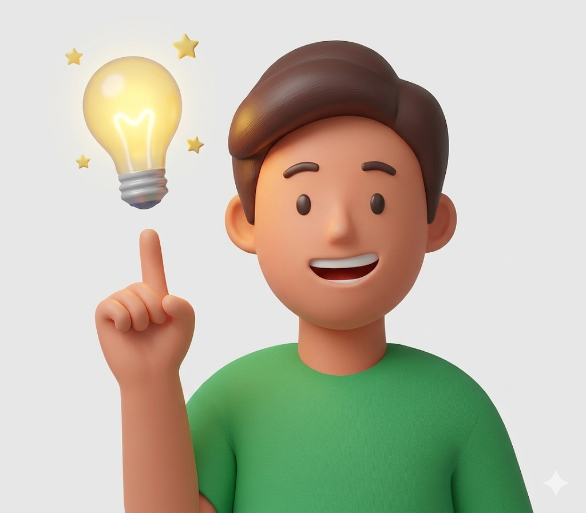
User wants to create a 3D model
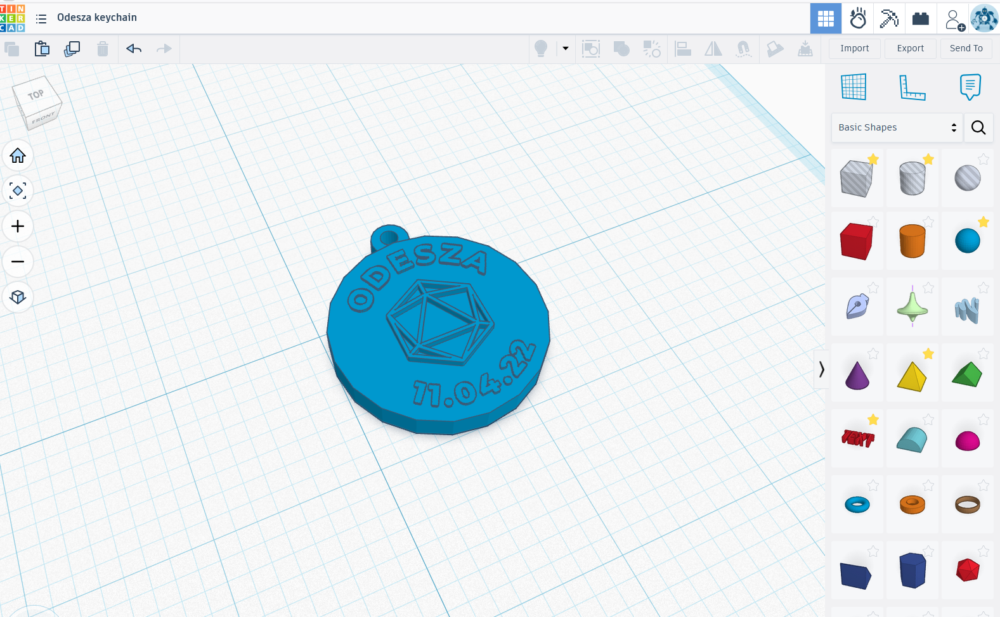
User exits the Toybox app and models creation in another app.
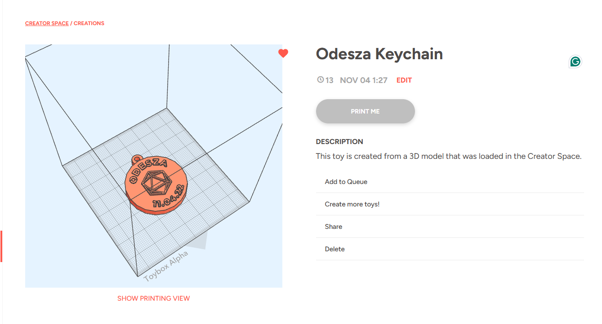
User imports toy into Toybox. Return to Toybox to print.
prints came from phones and iPads, and only about 7% from desktop. Touch came first, and a phone in portrait was the tightest screen.
Every tool had to make sense for a kid with no prior 3D modeling experience to use.
Child-safety rules meant adult testers, so kid-specific choices were hypotheses until launch data came in.
With only 2 engineers on this project, it meant slower times to test my solutions.
To better understand what was already on the market, I did a competitor analysis with existing desktop and mobile 3D modeling apps. What differed the most was that the Toybox CAD app would be specifically designed for 3D printing.
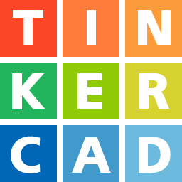
TinkerCAD Shapr3D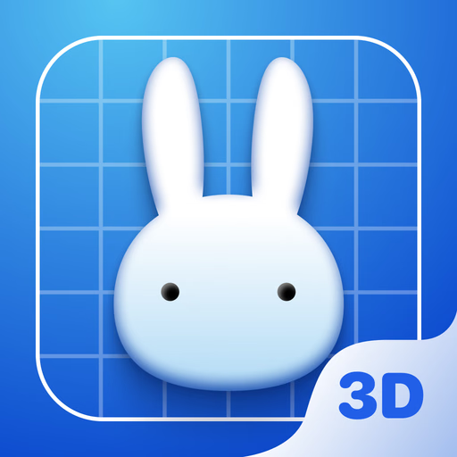
Shapeyard Vectary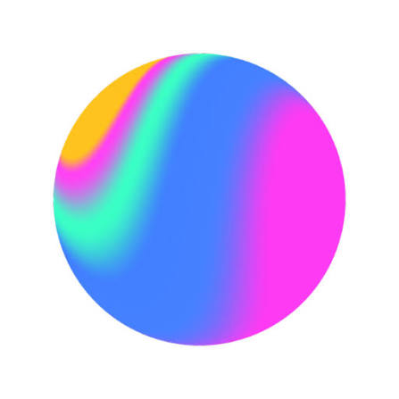
Spline| TinkerCAD | Shapr3D | Shapeyard | Vectary | Spline | Toybox | |
|---|---|---|---|---|---|---|
| Desktop | ||||||
| Mobile | ||||||
| Beginner Friendly | ||||||
| Optimized for 3D printing |
Our top competitor TinkerCAD, was used heavily within members of our community, but the biggest problem of the website was that it was NOT mobile friendly. With over 50% of the Toybox users being mobile phone users, it was necessary for our app to be mobile friendly.
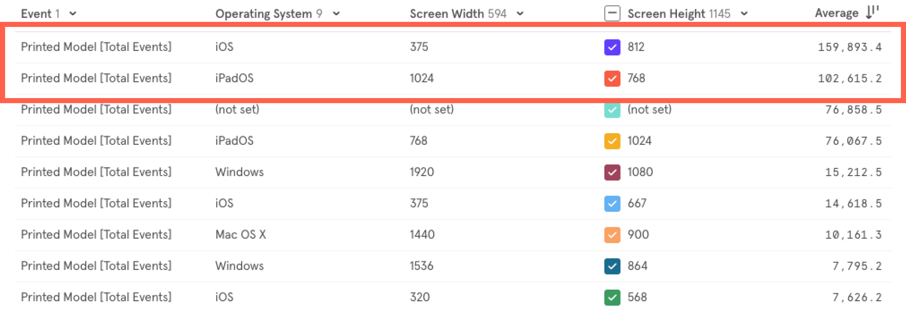
To understand professional 3D modeling, I interviewed our in-house toy designers and watched how they work in Blender and ZBrush. It showed how complex pro workflows are, and which tools are non-negotiable even for beginners, like boolean operations (union, subtract, intersect).
Using the competitor analysis and interview with the toy designer, I initiated and co-led the session where the Product team and I listed every candidate tool across eight areas and ranked each area against what is absolutely necessary for a 3D modeling app. Move ranked first in all three; Properties ranked last. Instead of debating features one by one, we kept the simplest tools that let a beginner finish a first model.
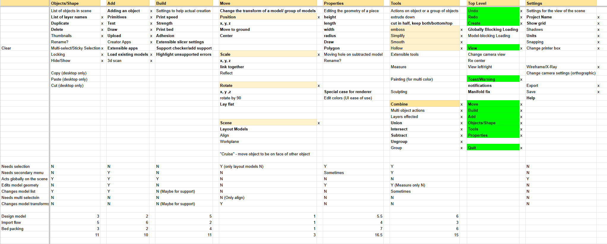
These results were then synthesized to the most important features that would be needed in a 3D modeling app for Toybox.
Every phone screen needed a matching tablet and desktop version, and few things carried over directly. I explored layouts for each device side by side, which slowed the project down. Below are a few of those explorations, followed by what fixed the problem.
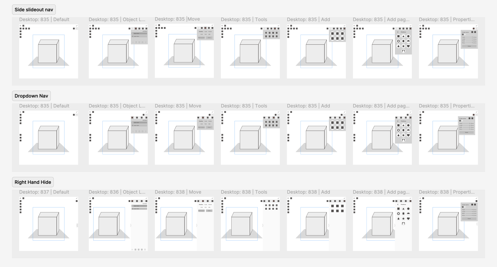
On mobile, the groups became a bottom tab bar, a pattern kids already use daily. On tablet and desktop the same groups moved to left and right panels, because large screens have room at the edges and the 3D view needs the center.
A 3D editor has dozens of functions and a phone has room for five. To decide where each group could live, I classified every function by how it behaves. This meant asking questions like:
By categorizing the features of this app, I was able to come up with a set of key groupings that could translate easily between devices.
I couldn’t test with 10 to 14-year-olds directly, so 15 to 20 adults with no 3D experience tried two beta builds: coworkers, their families, and parents from the Toybox Facebook community.
Toybox printers are used by entire families, so they were real users, although they couldn’t replace a kid’s patience.
Testing showed that designing screens and using them were two different things, especially for 3D controls I couldn’t design in Figma.
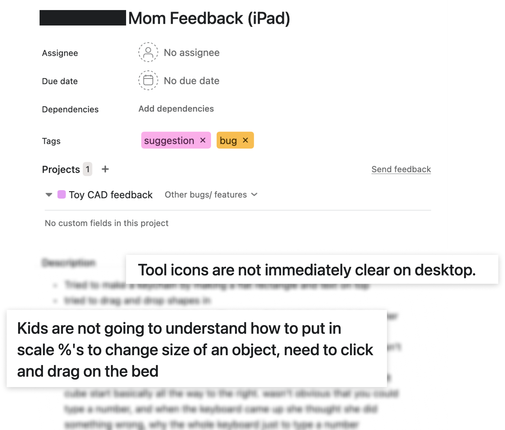
After the first beta, we moved Edit from the bottom nav into the 3D scene. For it to be used, it needs a selection, so it now only appears when an object is selected.
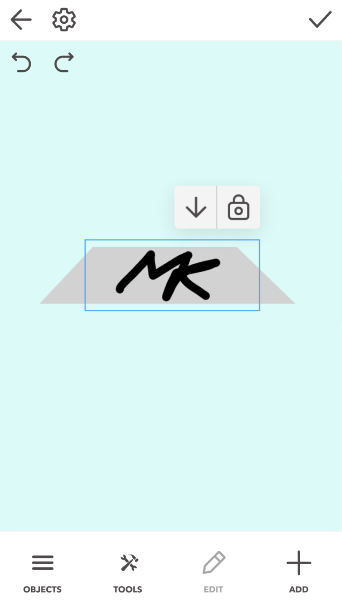
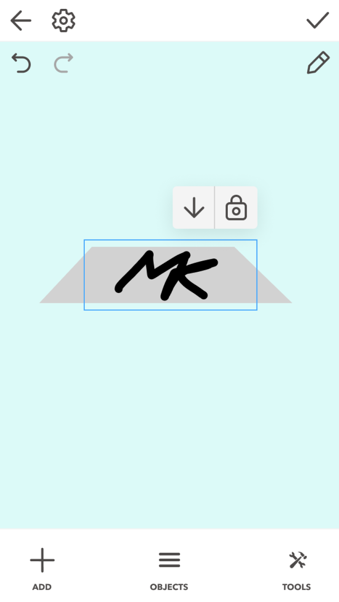
Testers told us the tool icons alone didn’t explain what each tool did, which matched our own experience. We made the Tools menu collapsible on tablet and desktop.
Members of the “Toybox 3d printing community” Facebook group often asked how to rescale imported models, and a parent testing on iPad noted that kids won’t understand typing scale percentages. We added contextual Scale equally and Snap to floor toggles, so resizing works without typing numbers.
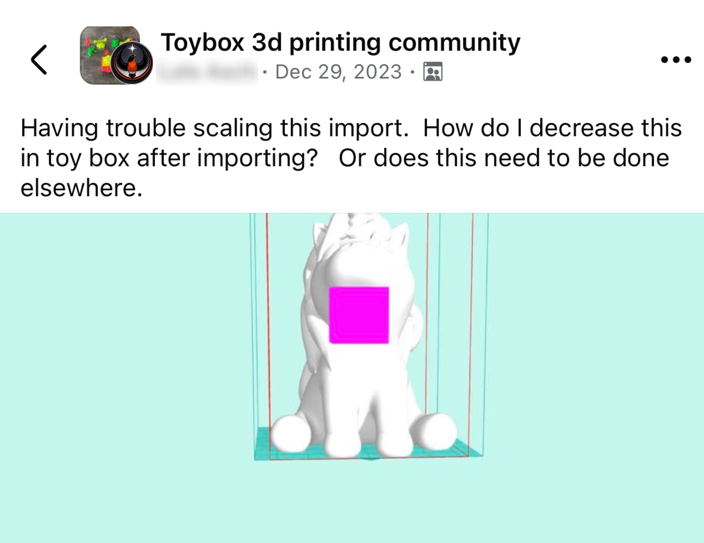
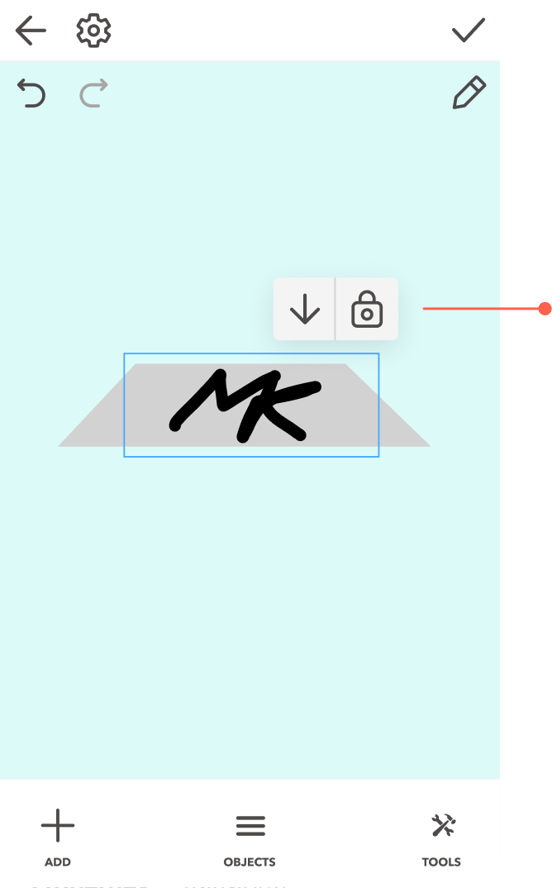
In the second beta, testers struggled to find Build inside Settings. Every model has to be sliced before it can print, and Build is the only place to control print settings, so I moved it into the phone’s main nav and next to the print button on larger screens.
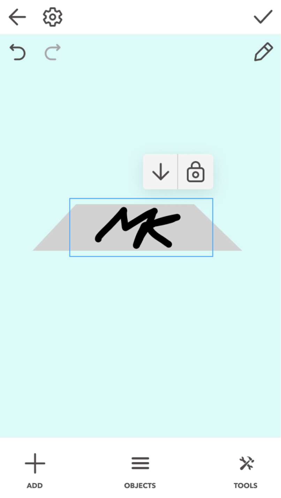
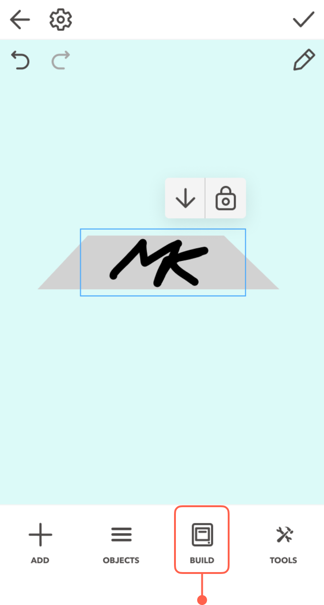
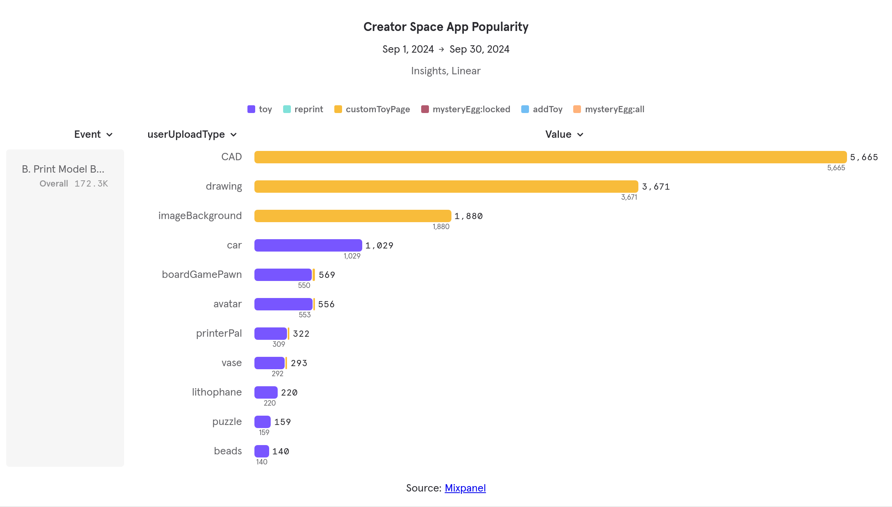
And the toys got printed. In September 2024, the first full month after launch, users printed 5,665 CAD toys: 39% of all prints of user-generated toys, about 1.5× drawings (3,671) and 5.5× cars (1,029), the most-printed template.
Leading this from 0 → 1 as the only designer taught me more about cross-platform systems and working with engineers than any project before it. Four lessons I still use:
At the beginning I was very overwhelmed with the amount of content that had to fit within this project.
Exploring various layouts separately slowed the project. Next time I would start with mobile phone first, and I design only what each larger screen adds rather than trying to balance all 3 at once.
I couldn’t test a lot of my designs until the engineering team had created a prototype of the modeling program.
If I were to redo this project with modern day AI tools, we would’ve been able to test layouts and touch interactions much faster.
With no research team and no 3D modeling background, I had to learn the domain fast and make the most of what I had: our in-house toy designers, the pro tools they used, and the Toybox community as beta testers.